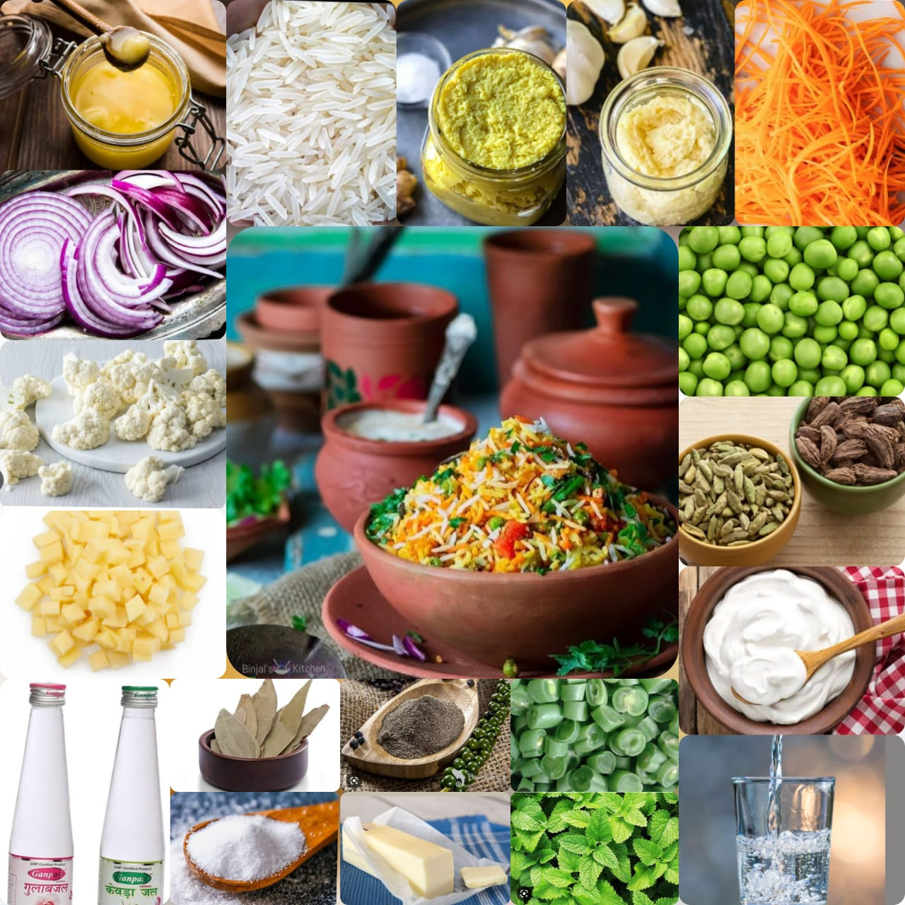

Veg Biryani
Home
Hyderabadi Veg Biryani curry is a traditional Hyderabadi cuisine from India that combines vibrant veggies and complex spices to make a flavourful dish. It is a great lunch or dinner alternative and pairs well with raita.
Ingredients
Basmati Rice
Green Peas
Chopped French Beans
Chopped Potatoes
Chopped Cauliflower
Chopped Carrot, Capsicum
Chopped Cabbage, Onion
Chopped Tomatoes
Fresh Mint Leaves
Red Chilli
Dhaniya Powder
Garam Masala
Ginger Garlic Paste
Black Pepper Powder
Green and Black cardamom
Cloves
Turmeric Powder
Salt
Ghee
Water
raisins
black pepper corns
cumin seeds

Nutrition Facts
Calories 108
Total Fat 3.2g
Cholesterol 8mg
Sodium 181mg
Total Carbohydrate 18.0g
Potassium 103mg
Iron 1.1mg
Procedure
Heat 2 tablespoons of ghee in a kadai.
Add 2 green cardamom, 1/4th tsp cumin seeds, 2 cloves, 3 Black pepper corns, 6 Cashews, 4 dried golden raisins, 4 chopped onions and saute.
Add 1 tablespoon of chopped tomato, 1/2 teaspoon ginger garlic paste, 1 tablespoon of chopped french beans, 1 tablespoon of peas, 1 tablespoon of diced carrot, 1 tablespoon of green cabbage, 1 tablespoon of chopped green capsicum, 1/4th teaspoon of chili powder, 1/4th teaspoon of tumeric powder, 1/4th teaspoon of dhaniya powder, 1/4th teaspoon of cinnamon powder, 1/4th teaspoon of garam masla, 1/2 teaspoon of salt, 1 teaspoon of chopped mint leaves and mix well.
Add 25ml water, stir, add 1 tablespoon of chopped cauliflower, 1/4th cup basmati rice and mix.
Allow to cook until completely done.
Serve hot with raita.
Finally enjoy the heavenly taste of Hyderabadi Veg Biryani...!
Expert Guide
Back ←
Scroll to Top ↑